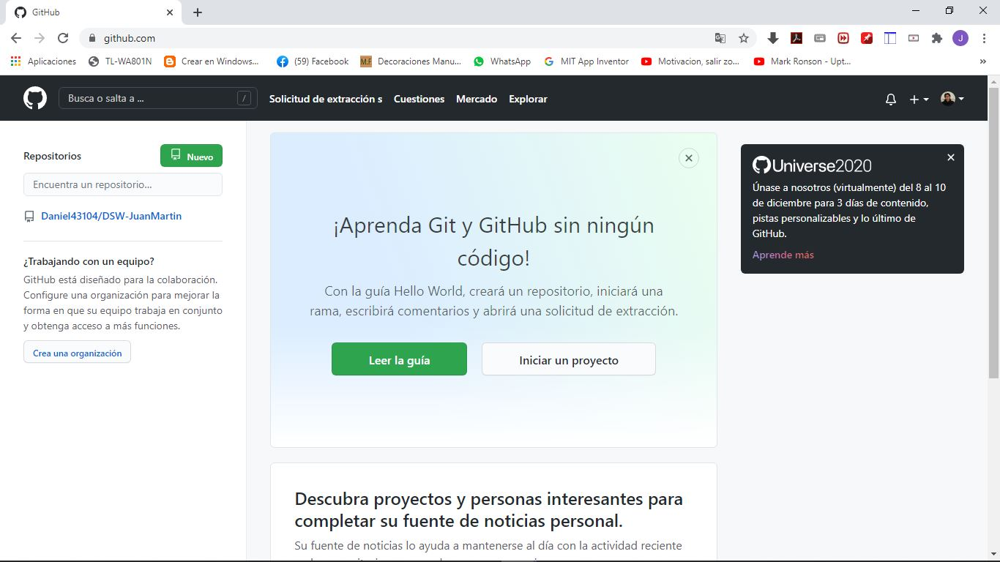

Git y Github
Conceptos.
• Git.• github.
grafico 1
Imagen del logo de github
Nota. Adaptado de anthoncode.com Publicado en enero 27, 2019
• https://anthoncode.com/github-logo-vector-eps/.Github
Es una plataforma que permite el almacenamiento de codigo,
trabaja utilizando el sistema de control de versiones de git,
se utiliza principalmente para llevar el control de versiones de un proyecto
ya sea individual o un trabajo colarativo de una forma grafica y Sencilla.
grafico 2
Imagen del logo de github
Nota. captura de la plataforma online github. autoria propia
Copyright © 2020 - Juan Daniel Martin Lopez. - contacto